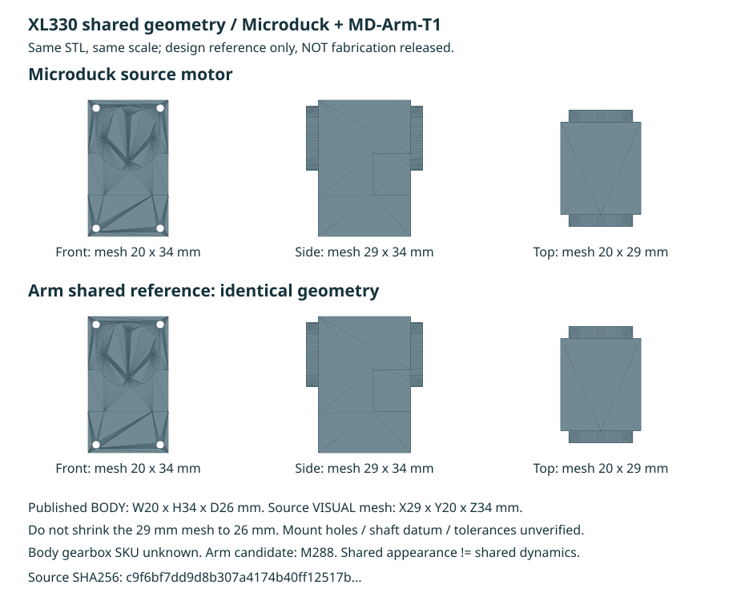
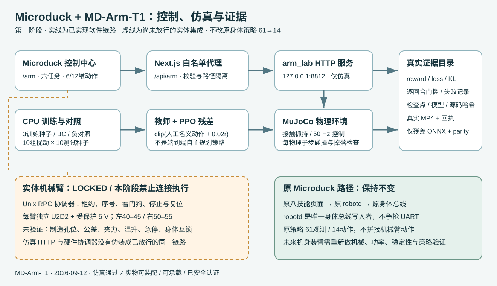
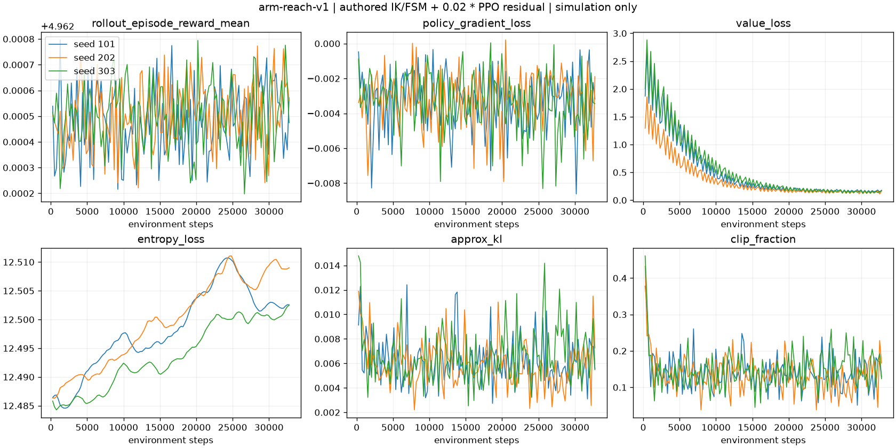
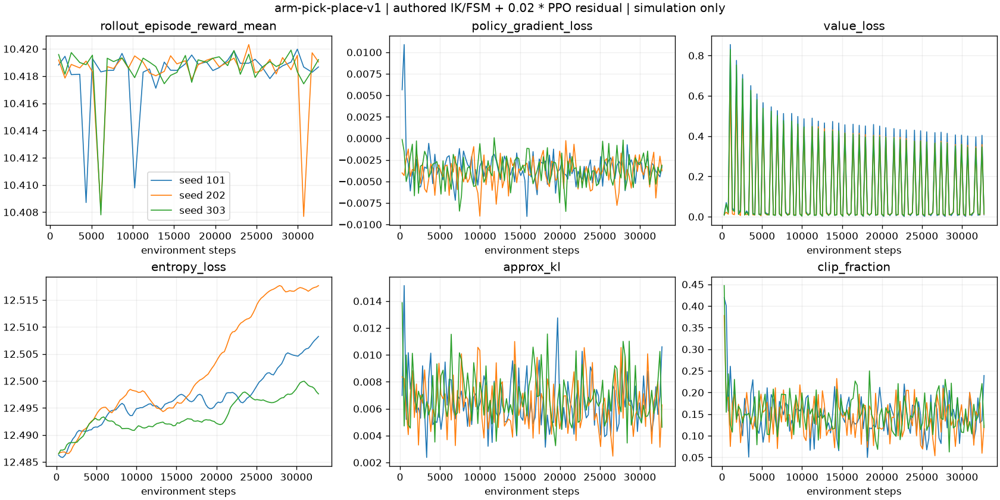
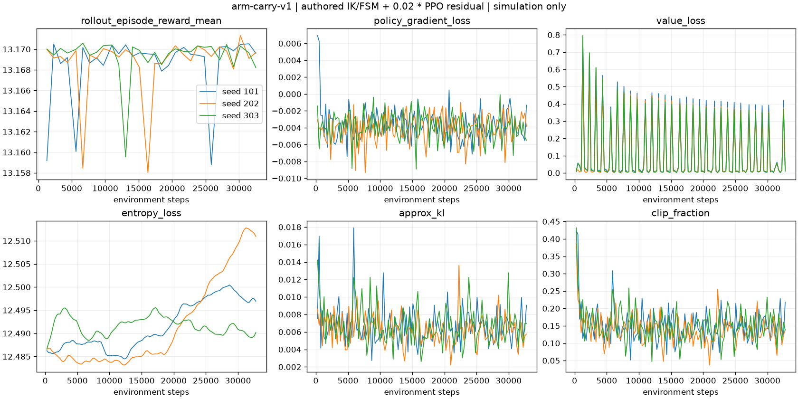
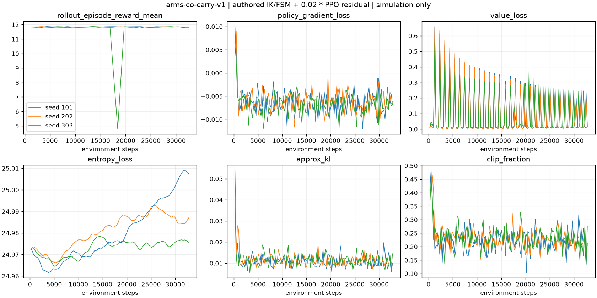

Microduck 与机械臂：共享电机和部件一致性核对
日期：2026-09-12。范围：用户指定的 rlx/rlx/mjlab_microduck/robot/microduck/robot_allcollisions_backlash.xml、其资产、机械臂 BOM/CAD 和厂家规格。未接实体硬件，未确认身体电机完整 SKU，未放行制造。
1. 核对结论
- 该 XML 有 15 个
xl330 电机外观实例，全部引用同一个 assets/xl330.stl；有 14 个主动执行器、14 个 backlash 关节。嘴部不在原有 14 动作策略内，不能把 14 动作等同于 14 台实物电机。
- XML 和
xl330.part 标明 XL330 家族，没有 M288/M077 后缀。机械臂仍是 XL330-M288-T 候选、每臂 6 个，不能据此声称身体必定是相同减速箱版本。
- 已将机械臂 OpenSCAD 的电机显示由另画的方盒改为直接导入身体的原始 STL；BOM 和规格文件记录同一资产路径，生成器记录 SHA256、Onshape part 元数据及每个身体实例的位姿。
- 原 STL 坐标单位按源 MuJoCo 模型为米。CAD 仅做统一 ×1000 转毫米、居中和绕 Z 轴旋转 90°，不改变比例、不重绘安装孔。
- 本次不修改身体 XML、原 STL、机械臂训练物理模型或评估标准。共享外观来源已实现；机械安装、动力学和实机兼容仍须分别验证。
2. 同源三视图与尺寸差异

| 表示 |
尺寸 |
使用范围 |
| ROBOTIS 发布的本体包络 |
W20 × H34 × D26 mm |
规格、初步本体空间预算 |
| 当前身体原始 STL 的轴对齐边界 |
X29 × Y20 × Z34 mm，4,126 个三角形 |
本次共享外观/几何比较 |
| CAD 旋转后的网格边界 |
W20 × H34 × D29 mm |
保留源网格，不强压成 D26 |
| 厂家精密装配图 |
未取得可验证的 STEP/PDF 二进制 |
孔位、轴线基准、公差仍然阻断 |
29 mm 与 26 mm 不是可随意修正的舍入误差。 是否来自输出端凸起或模型简化，当前没有足够证据，报告不猜测。旧 xl330-body-envelope.stl 仍只表示厂家本体包络，不是安装模型，也不是整个电机所有凸出部分的碰撞包络。
ROBOTIS 的 M288 与 M077 手册指向相同的通用 XL330.pdf / XL330.dwg / XL330.stp 下载入口，支持使用同一外部零件 CAD；但仍需检查厂家图纸与实物修订后才能确定精密配合。
3. 相同外形不等于相同马达参数
| 厂家参数（5 V 条件） |
XL330-M288-T 候选 |
XL330-M077-T 对比 |
| 减速比 |
288.4:1 |
77.5:1 |
| 堵转力矩 |
0.52 N·m |
0.215 N·m |
| 空载速度 |
103 rpm |
383 rpm |
| 堵转电流 |
1.47 A |
1.47 A |
| 本体质量 |
18 g |
18 g |
两者推荐 5 V、输入范围 3.7–6 V。堵转指标不是连续工作额定值；不同减速箱的控制参数、惯量、摩擦、回差不能因为 CAD 相同就混用。当前机械臂 BOM 不允许用 M077 无审查替换 M288。
用户 XML 的 chosen_actuator 为 kp=0.55、kv=0、forcerange=-0.96…0.96；还有 ±1° 的 backlash 模型。这些是该身体模型的仿真设置，不是 0.96 N·m 的厂家承载认证，也不是机械臂校准结果。本次没有把它们复制进机械臂训练模型。
4. 其他部件逐类核对
| 部件/接口 |
身体模型或软件中证据 |
机械臂处理 |
| 电机外观 |
15 个同源 xl330 mesh |
共享原 STL 和坐标约定；实物 SKU 仍待读取/铭牌核实 |
| 电机支架 |
存在 motor_support mesh |
不假设能直装到肩/肘；孔位、受力、线缆余量需独立设计 |
| 轴承 |
seeed_bearing__configuration__22x16x4 及 configuration_default |
名字不是轴承额定载荷证书；不直接复用未核实的规格/公差 |
| 电池 |
XML 有 np_f970 外观；身体软件电量估算 6.6–8.2 V |
电池侧数值不是舵机轨电压；保持机械臂独立电源，不连接身体电池正极 |
| 控制板/计算机外观 |
XML 包含 pcb__raspberry_pi_zero_2_w 与 elec_rpi_robot_hat_pcb |
旧 CAD 名称不代表当前机载硬件实物 BOM，不能据此开 PCB 或认定引脚 |
| TTL/连接器 |
身体代码使用 XL330 总线；具体物理线束仍需核实 |
机械臂保留独立 U2D2；舵机 1GND/2VDD/3DATA，U2D2 的 2 为 N/C |
| 夹爪 |
身体嘴部零件不是已验证机械臂夹爪 |
不把嘴部连杆替作承重夹持器；夹爪传动和开口标定仍独立验证 |
完整网格实例清单和位姿见 hardware/md-arm-t1/generated/component-consistency.json，不只核对名称而忽略父 body 和变换。
5. 可打开的文件及复现
hardware/md-arm-t1/cad/md_arm_t1.scad：设 render_part="shared_motor" 查看同源电机。原 assembly 仍是三个电机参考体的连杆草图，不是六电机完整装配。hardware/md-arm-t1/generated/shared-xl330.scad：由现有规格和源 STL 生成，禁止手工维护第二套电机外形尺寸。hardware/md-arm-t1/generated/shared-xl330-comparison.svg：两排共用相同图元的三视图，可直接浏览。hardware/md-arm-t1/generated/shared-xl330-preview.xml：独立的 MuJoCo 双电机视觉比较场景，两边共用 mesh ID 0；不替换训练场景，不证明碰撞安全。hardware/md-arm-t1/generated/component-consistency.json：来源、哈希、尺寸、位姿、型号未知状态、动力学隔离声明。
rlx/.venv-microduck/bin/python hardware/md-arm-t1/scripts/generate.py
rlx/.venv-microduck/bin/python -m unittest discover -s hardware/md-arm-t1/tests -p 'test_*.py'
当前硬件测试 10/10 通过，包含生成器、共享图元、坐标/尺度、15/14 计数和损坏 STL 拒绝。MuJoCo 已实际载入比较场景：nmesh=1、ngeom=2、两几何共用 [0,0]。测试通过不等于 OpenSCAD 编译验证：本机没有 OpenSCAD CLI，SCAD 只完成源码与引用检查。
6. 下一阶段放行条件
- 逐个记录身体/机械臂电机完整 SKU、硬件/固件修订和型号寄存器；身体当前未知，不填假值。
- 获取有效厂家 CAD、核对安装孔/轴线/舵盘/螺纹啮合及连接器插拔空间；建立一个共同零件库，不分别画两份相同电机。
- 完成六电机实际装配、双侧支撑和干涉/线缆/重量校核；共享 mesh 不能替代装配设计。
- 实测不同关节负载下的限流、温升、摩擦、回差，再决定机械臂参数，不能照搬身体拟合值。
- 若改变训练模型的质量、碰撞体、传动或马达约束，创建新模型版本并重新训练/验证；不得把当前旧模型的通过率移作新硬件结论。
官方来源
检索日期：2026-09-12。
MD-Arm-T1 实现与课堂复现实验
日期：2026-09-12。软件仿真实现，不是制造放行或实物验收。
1. 交付边界
这次新增六个机械臂实验，保留原有八个 Microduck 技能与身体策略契约。机械臂采用独立桌面底座；没有把重型机械臂挂到鸭子身上，没有改写 microduck/ 的 robotd，没有接通任何实体串口或舵机。
2. 集成架构与电气隔离

flowchart TD
Browser[Microduck 控制中心 /arm] --> Proxy[Next.js 白名单 API /api/arm]
Proxy --> Sim[127.0.0.1:8812 arm_lab]
Sim --> Physics[MuJoCo 真接触环境]
Sim --> Evidence[训练 / 验收 / MP4 哈希证据]
Train[Mac CPU RLX 工作区 / SB3 PPO] --> Evidence
Train --> Physics
Browser -. 后续经鉴权与人工放行 .-> RPC[Unix JSON-RPC arm_control]
RPC --> Lease[独占租约 / 序号 / 截止时间 / 看门狗]
Lease --> Locked[实体硬件 LOCKED]
Locked -. 尚未放行 .-> Left[独立 U2D2 + 5V 支路 / IDs 40–45]
Locked -. 尚未放行 .-> Right[独立 U2D2 + 5V 支路 / IDs 50–55]
Body[原 Microduck 控制页] --> Robotd[原 robotd / 唯一身体总线写入者]
Robotd --> Original[原 UART 与原舵机 / 身体策略 61→14]
实线是现有软件链路；虚线是尚未授权的实物集成。 HTTP 仿真并不经由 Unix 硬件协调器，也不等于已经实现机身运动互锁。arm_control 的模拟 transport 只用于 RPC/安全状态机测试，其固定温度、电压不是传感器实测；网页不展示这些数值为真机遥测。
每臂新购六颗 XL330-M288-T、独立 USB/U2D2 与受保护的 5 V 供电。复用的是 Dynamixel 技术栈与控制思想，不是拆走原机电机，也不保证原机不同 XL330 子型号的力矩/速度参数相同。详见硬件 BOM 中的逐项核验。
禁止机械臂 VDD 接原电池、机械臂 DATA 接原身体 DATA、把 U2D2 当电源、把六颗电机总电流穿过一段未经额定验证的三针线束。电源支路保护、急停触点、线束载流量以及安装公差未验证，不能给学生接线通电。
3. 模型参数：哪些是真实规格，哪些是仿真假设
| 项目 |
实现值 |
证据等级/限制 |
| 姿态关节 / 夹爪 |
5 个转动关节 + 1 个联动夹爪动作 |
不是任意六维姿态可达机械臂 |
| 臂长 / 肩高 |
65 / 55 / 30 mm；肩高 80 mm |
项目布局参数，非成品臂测量 |
| 控制 / 物理步长 |
50 Hz；2 ms（另测 1 ms） |
仿真配置，不承诺 Mac 实时调度 |
| 角速度 / 开合速度 |
0.4 rad/s；0.01 m/s |
动作积分为位置目标；另有关节软限位 |
| 姿态伺服 |
kp=8，kv=0.15，力矩限制 ±0.16 N·m |
仿真假设；不是厂商持续额定力矩 |
| 夹爪模型 |
两滑块、一个 equality 联动；kp=350，kv=2，执行器力限 ±1 N |
还未标定真实舵机角度—开口—夹力映射 |
| 夹垫接触 |
摩擦 1.2，condim=4，扭转摩擦参数 0.005 |
假设软垫；必须实测并做 sim2real 标定 |
| 物体 |
freejoint；接触摩擦抓取 |
无物体 weld、瞬移、外力托举或动画替代物理 |
| 碰撞检查 |
每个物理子步；桌面、障碍、臂间及非相邻自碰撞 |
共位腕关节壳体有显式 elbow–hand 相邻排除；不是全 CAD 碰撞验证 |
| 双臂底座间距 |
交接 150 mm；协作托盘 242 mm |
两种独立桌面布局，不能把历史 220 mm 方案冒充已验证通用布局 |
MuJoCo 使用简化胶囊/盒体和设计质量，不是由已加工 CAD、实际转动惯量、间隙或 BAM 电机标定导出的数字孪生。仿真成功不能证明打印件装得上、舵机不发热或实物能承载。
当前物体位姿、双指接触、负载与滑移观测来自MuJoCo真值，不是实际相机或力传感器。实物阶段还需选定桌面视觉/标记物与接触测量方案，完成内外参、世界/底座/TCP变换、时间戳和延迟验证；当前没有实体66/116维观测编码器。缺少这些测量时必须保持sim-only，不能用零值冒充有效感知。
4. 六个课堂实验
| ID |
内容 |
本次载荷 |
核心验收 |
| arm-reach-v1 |
末端触达 |
无搬运载荷 |
位置≤5 mm、工具轴≤5°，连续 1 s |
| arm-pick-place-v1 |
取物再放置 |
20 g |
双指接触抬升≥20 mm 持续 1 s；受控释放后稳定 2 s |
| arm-relocate-v1 |
跨过固定障碍移物 |
20 g |
同上；禁止碰障碍，不把推到目标当抓取 |
| arm-carry-v1 |
沿三航点搬运 |
20 g |
三航点、路径≥80 mm、运输倾角<10° |
| arms-handover-v1 |
左手给右手 |
5 g 降载课程 |
双手重叠夹持≥0.5 s、接收手单独保持≥1 s |
| arms-co-carry-v1 |
两手共同搬托盘 |
托盘12 g + 松散载荷5 g = 17 g |
共享抓持≥95%、倾角<5°、三维载荷滑移<5 mm、平移≥50 mm |
所有操作任务必须按接触抓持→实际抬升→有支撑的受控释放→当前目标状态稳定完成；旧计数器历史最高值不能单独判成功。终态要求目标误差≤10 mm、无夹爪接触、开口≥26 mm、末端退出≥30 mm、物体有桌面支撑且线/角速度受限。空中丢失抓握超过 20 ms、非受控落桌、非法接触均禁止通过。
协作托盘另验证准静态载荷：至少25个控制采样，每臂平均垂直支撑≥总重20%；总支撑在重量的80%–120%内的样本≥95%；水平内力峰值<1 N。这只是显式仿真守卫，不是已标定的硬件夹力安全阈值。 双臂20 g额定课程与实物验收仍未完成。
5. 训练方法与指标解释
flowchart LR
Model[可达性 / 有限力矩 / 接触物理] --> Teacher[人工编写 IK / 定时 FSM 教师]
Teacher --> Dataset[教师轨迹数据]
Dataset --> BC[全动作 BC 诊断基线]
Teacher --> Nominal[名义动作]
PPO[小型 PPO 残差策略] --> Sum[clip 名义动作 + 0.02 × 残差]
Nominal --> Sum
Sum --> Rollout[MuJoCo rollout]
Rollout --> Loss[PPO 更新 / 奖励与损失日志]
Loss --> PPO
Rollout --> Evaluate[冻结源码 / 独立种子 / 扰动组 / 负对照]
Evaluate --> Video[真实 MP4 / 哈希回执 / 逐帧核对]
这里 PPO 学的是有界小残差，而不是从零学会全部抓取规划。教师承担到达、闭爪、抬升、运输、放下及退出顺序；双臂观测中的阶段来自该人工定时调度。BC 是带调度上下文的全动作诊断，不是自主规划基线。BC 的 MSE 下降也不能代替操作成功率；任何失败必须保留。
PPO：CPU、一个环境、每轮256步、batch256、4 epochs、两层64单元、学习率1e-4、gamma0.99、GAE0.95、clip0.1、entropy0.001、梯度上限0.5、target KL0.02。每个任务用101/202/303三个训练种子，每次32768环境步。实际版本、时长、参数变化、源码/场景/检查点哈希记录在各自 training.json。
日志包括 metrics.jsonl 的 policy/value/entropy loss、KL、clip fraction、explained variance、标准差、更新数；episodes.jsonl 记录每回合训练奖励、长度、是否过门槛。BC 的采样数据、逐轮MSE单列保存。任务奖励包含进度、抓握、抬升、成功、动作代价/变化、碰撞与掉落项，奖励不是独立验收标准。
BC表格来自训练进程内的真实诊断评估；其诊断记录没有PPO那样完整的检查点哈希绑定。因此网页不能把BC报告冒充完整验收产物，会显示证据未核实；PPO的18份主评估则经过检查点/模型/源码验证。课堂比较时要区分“记录了成功次数”与“完整产物溯源已验证”。
每个 PPO 检查点在10组配置×10个种子评估：位置随机±0.5/1/1.5/2 mm、质量±10%、摩擦±10%、小幅组合扰动。种子从50000开始，与训练、调试不同。报告包含每组成功率、失败门槛、回报、95% Wilson 区间。不同训练种子复用同一测试集，是配对比较；不能把300次合并成300个独立场景。通过标准为任务总成功率≥95%/90%/85%（随任务），且各组≥80%。这些小扰动不是完整 sim2real 随机化。
质量/摩擦扰动施加于主 object 刚体及其几何体；协作场景中被扰动的是12 g托盘本体，额外5 g松散载荷保持不变。因此±10%托盘质量对应15.8–18.2 g装配总重，不是整个17 g系统的±10%。起点与目标共享平面平移抖动，不是任意新目标或任意障碍布局泛化。
6. 复现命令
从工作区根目录运行，使用现有 rlx/.venv-microduck，不改动原八技能依赖：
rlx/.venv-microduck/bin/python -m pytest rlx/tests/test_arm_contract.py rlx/tests/test_arm_evaluation.py rlx/tests/test_arm_pipeline.py
python3 -m unittest discover -s arm_control/tests -v
python3 -m unittest discover -s hardware/md-arm-t1/tests -v
rlx/.venv-microduck/bin/python rlx/examples/ppo_microduck_arm.py assets --output rlx/assets/md_arm_t1
rlx/.venv-microduck/bin/python scripts/arm_lab.py --port 8812
保留上面的仿真服务，在另一终端从 duck-viewer 运行已有 npm run dev，打开其实际打印的端口并进入 /arm。已有服务可以直接访问同一页面，不需要停止旧 duck-lab；8812 特意与旧879x端口分开。
rlx/.venv-microduck/bin/python scripts/run_arm_experiments.py --output rlx/runs/arm/my-fresh-batch --workers 3
rlx/.venv-microduck/bin/python rlx/examples/render_microduck_arm.py --case arm-pick-place-v1 --checkpoint rlx/runs/arm/my-fresh-batch/arm-pick-place-v1/seed-101/ppo-residual.zip --output rlx/runs/arm/my-fresh-batch/arm-pick-place-v1/seed-101 --export
批处理拒绝已有目录，避免覆盖失败与旧证据。执行命令返回成功只代表程序执行完，不代表案例通过；查看 evaluation.json 的 passed、每个门槛与完整回放。
7. 学生实践顺序与剩余门槛
- 先学习 BOM 上“厂商事实 / 设计假设 / 待验证”的区别，读电路图，不通电。
- 在
/arm 手动移动单关节，观察几何、目标与限位，重置后运行教师；解释为什么这不是 PPO。
- 跑零动作、开爪、双臂禁右手负对照，观察失败门槛，证明验收不是只看终点距离。
- 训练 BC 和残差 PPO，对照回报曲线、损失、成功率、区间和不同种子的结果。
- 看 MP4 中真实抓持、抬升、交接、落放；用回执核对案例、检查点、源码和模型版本。
- 在独立硬件阶段完成孔位/公差、夹爪映射、电压/电流/温升、供电保护、急停响应、校准与带载测试。
- 最后再补原
robotd 的可证明身体运动独占互锁、策略组合推理和桌面硬件闭环。此之前不能解除硬件锁，更不能把当前残差 ONNX 直接发给舵机。
最终结果以本目录 RESULTS.md 及对应运行产物为准；没有结果的项目明确保留“未执行/未通过/未验证”。
机械臂训练与验收结果
历史 v2 结果，保留用于对照，不是当前修复版的验收结论。 当前严格修复与重新训练结果见 repair-v3/RESULTS.zh-CN.md。旧模型/旧视频必须使用对应归档源码复现，不应与当前环境源码混用。
日期：2026-09-12。自动汇总真实运行文件；不是实物能力证明。
控制方法：人工 IK/定时 FSM + 0.02×PPO 残差，不是纯 PPO 从零学会操作。 三个训练种子使用同一套独立测试配置，不能把配对回放当作300个独立场景。
主结果矩阵
| 任务 |
教师 |
BC诊断 |
PPO 101 |
PPO 202 |
PPO 303 |
3种子均过门槛 |
| 末端触达 |
100/100 |
100/100 |
100/100 |
100/100 |
100/100 |
通过 |
| 抓取放置 |
100/100 |
0/100 |
100/100 |
100/100 |
100/100 |
通过 |
| 绕障移物 |
100/100 |
0/100 |
100/100 |
100/100 |
100/100 |
通过 |
| 航点搬运 |
100/100 |
0/100 |
100/100 |
100/100 |
100/100 |
通过 |
| 双臂交接（5 g） |
100/100 |
0/100 |
100/100 |
100/100 |
100/100 |
通过 |
| 共同搬托盘（17 g） |
99/100 |
23/100 |
99/100 |
98/100 |
98/100 |
通过 |
真实PPO环境步总数：589,824。各检查点独立记录参数变化，不用教师结果冒充PPO评估。
BC诊断失败不隐藏，不因训练MSE降低宣布任务学会。即使复合控制通过，教师已完成绝大部分任务，因此本实验不能证明PPO优于教师。测试扰动较窄；不能推断开放世界泛化或实体部署。
不包括的验证
- 实物20g载荷、夹力/温升、CAD装配公差、电源与保险协调、急停响应均未验证。
- 双臂交接仅5g课程，协作搬运17g总重，不冒充双臂20g能力。
- ONNX仅导出残差演员，必须配合相同教师、契约和限幅；原61→14身体策略不可替换。
- 软件互锁不是功能安全认证；HTTP仿真与硬件Unix协调器尚不是同一已放行的实物执行链。
末端触达 / arm-reach-v1
| 训练种子 |
步数 |
训练秒数 |
参数L2变化 |
平均测试回报 |
Wilson95% |
最差扰动组 |
| 101 |
32768 |
17.38 |
1.3183 |
4.9625 |
96.3%–100.0% |
100% |
| 202 |
32768 |
15.87 |
1.2718 |
4.9625 |
96.3%–100.0% |
100% |
| 303 |
32768 |
15.87 |
1.4624 |
4.9625 |
96.3%–100.0% |
100% |

抓取放置 / arm-pick-place-v1
| 训练种子 |
步数 |
训练秒数 |
参数L2变化 |
平均测试回报 |
Wilson95% |
最差扰动组 |
| 101 |
32768 |
23.90 |
0.7921 |
10.4180 |
96.3%–100.0% |
100% |
| 202 |
32768 |
21.72 |
0.7795 |
10.4182 |
96.3%–100.0% |
100% |
| 303 |
32768 |
21.82 |
0.7738 |
10.4183 |
96.3%–100.0% |
100% |

绕障移物 / arm-relocate-v1
| 训练种子 |
步数 |
训练秒数 |
参数L2变化 |
平均测试回报 |
Wilson95% |
最差扰动组 |
| 101 |
32768 |
24.37 |
0.8035 |
10.3967 |
96.3%–100.0% |
100% |
| 202 |
32768 |
22.15 |
0.6985 |
10.3977 |
96.3%–100.0% |
100% |
| 303 |
32768 |
22.67 |
0.7369 |
10.3966 |
96.3%–100.0% |
100% |

航点搬运 / arm-carry-v1
| 训练种子 |
步数 |
训练秒数 |
参数L2变化 |
平均测试回报 |
Wilson95% |
最差扰动组 |
| 101 |
32768 |
28.41 |
0.7260 |
13.1685 |
96.3%–100.0% |
100% |
| 202 |
32768 |
23.72 |
0.5869 |
13.1693 |
96.3%–100.0% |
100% |
| 303 |
32768 |
24.89 |
0.6602 |
13.1691 |
96.3%–100.0% |
100% |

双臂交接（5 g） / arms-handover-v1
| 训练种子 |
步数 |
训练秒数 |
参数L2变化 |
平均测试回报 |
Wilson95% |
最差扰动组 |
| 101 |
32768 |
27.06 |
0.7780 |
15.0526 |
96.3%–100.0% |
100% |
| 202 |
32768 |
26.57 |
0.7762 |
15.0528 |
96.3%–100.0% |
100% |
| 303 |
32768 |
27.46 |
0.6737 |
15.0530 |
96.3%–100.0% |
100% |

- 全部运行文件：源代码快照、场景、检查点、逐回合奖励、PPO损失、每个测试回合的门槛及故障。
- 负对照成功数：
{"zero": 0, "open_gripper": 0, "disable_right": 0}；负对照验证通过。
- PPO失败门槛计数：
{}。
- 真实MP4、视频回执、6帧接触图；回放seed=50000，单次门槛通过。
- 训练曲线原始日志；BC训练记录。
共同搬托盘（17 g） / arms-co-carry-v1
| 训练种子 |
步数 |
训练秒数 |
参数L2变化 |
平均测试回报 |
Wilson95% |
最差扰动组 |
| 101 |
32768 |
48.65 |
0.7953 |
11.7654 |
94.6%–99.8% |
90% |
| 202 |
32768 |
47.28 |
0.8427 |
11.6923 |
93.0%–99.4% |
90% |
| 303 |
32768 |
65.37 |
0.6508 |
11.6941 |
93.0%–99.4% |
90% |

- 全部运行文件：源代码快照、场景、检查点、逐回合奖励、PPO损失、每个测试回合的门槛及故障。
- 负对照成功数：
{"zero": 0, "open_gripper": 0, "disable_right": 0}；负对照验证通过。
- PPO失败门槛计数：
{"no_drop": 5, "internal_force_bounded": 1}。
- 真实MP4、视频回执、6帧接触图；回放seed=50000，单次门槛通过。
- 训练曲线原始日志；BC训练记录。
MD-Arm-T1 硬件/CAD 交付
2026-09-12 部件一致性更新：已按用户指定的 robot_allcollisions_backlash.xml
统一机械臂 CAD 的电机外观来源。见 部件核对报告
和 同源三视图。
这不是实体型号确认、完整装配完成或制造放行；训练模型未修改。
日期：2026-09-12 · 状态：可审查设计文件，不是制造放行、载荷验证或安全认证
实际文件位于 ../../hardware/md-arm-t1/。
已交付
spec/md-arm-t1.json：把 ROBOTIS 厂商事实、项目设计尺寸和未知项分开标记。bom.json：单臂/双臂数量、精确候选型号和逐项兼容性检查。cad/md_arm_t1.scad：可编辑参数化概念 CAD；不含舵机安装孔。netlists/arm-ttl-netlist.json：带针脚名的 5 V/TTL 网络表。generated/md-arm-t1-mechanical.svg：65/55/30 mm 连杆和桌面/接物盘尺寸图。generated/md-arm-t1-wiring.svg：每臂独立 5 V、U2D2 TTL、急停和分路保护图。generated/*.stl：ASCII STL 非精密连杆毛坯/舵机包络和软接物盘概念件。scripts/generate.py 与 tests/test_generate.py：只用 Python 标准库生成并验证输出。
厂商事实
候选执行器是精确型号 ROBOTIS XL330-M288-T。官方页面给出：
- 18 g；外形包络
20.0 × 34.0 × 26.0 mm（W×H×D）。
- 输入 3.7–6.0 V，推荐 5.0 V。
- 5 V 堵转 0.52 N·m / 1.47 A；这不是持续额定力矩。
- 5 V 空载 103 rev/min；288.4:1；工作温度 −5…+70°C。
- TTL 半双工，多点总线；XL330 为 3.3 V TTL、兼容 5 V TTL。
- JST EH 三针：
1 GND、2 VDD、3 DATA。
U2D2 专用官方 pinout 图明确：TTL 口是 1 GND、2 N/C、3 DATA；而 XL330 舵机口是 1 GND、2 VDD、3 DATA。ROBOTIS 同时明确 U2D2 不给 DYNAMIXEL 供电。本设计由受保护的外部 5 V 分路给每颗舵机的 pin 2 注入电源，U2D2 pin 2 保持不连接。
官方来源和访问日期写在 JSON 中，包括 XL330 e-Manual、官方 PDF/DWG/STEP 下载入口与 U2D2 e-Manual。
项目设计尺寸
以下不是 ROBOTIS 规格：
- 五个姿态关节 + 一个联动夹爪执行器。
- 肩—肘 65 mm、肘—腕 55 mm、腕—TCP 30 mm，几何伸展 150 mm。
- 夹爪开口目标 0–30 mm，角度—开口映射待实测。
- 固定桌面使用。早期候选是底座名义 220 mm、可调 180–240 mm；该数值仅保留为历史设计输入。
- 当前仿真布局按底座中心距区分：
arms-handover-v1 为 150 mm，arms-co-carry-v1 为 242 mm。
- 因此共用实体台架必须至少覆盖 150–242 mm，否则应为场景使用独立/重设计平台，并重新验证仿真布局。150 mm 和 242 mm 只是仿真模型尺寸，不能据此声称实体臂、夹具、接物盘、线束或无碰撞工作区已适配。
- 20 g 是未验证的物理载荷目标，不是当前能力。
- 接物盘概念尺寸 250 × 200 mm、20 mm 围边；需按实测落物区调整。
电气边界
每条臂必须有独立稳压 5.0 V 电源和独立 U2D2 TTL 总线。两臂可共用一个机械急停动作件，但必须分别切断两条受保护的正极支路。每颗舵机有独立受保护 VDD 分支，TTL DATA 只构成单臂多点总线，所有单臂设备共用正确的信号参考地。
以下连接禁止：
- 机械臂 VDD 接 Microduck 原电池正极。
- 机械臂接入原身体舵机电源或 DATA 总线。
- 把 U2D2 当作舵机电源。
- 两条臂共用一条无分路保护的 5 V 馈线。
- 仅凭颜色/三针外观替换线缆。
候选 10 A/臂只来自 6 × 1.47 A = 8.82 A 的堵转电流算术规划，不允许通过持续堵转验证。电源、保险、急停触点、连接器与线径的具体料号/额定值仍须按实测启动电流、连续电流、故障电流和温升选择。
制造阻断项
不得从当前文件加工舵机支架。 虽然 ROBOTIS 提供 XL330 PDF/DWG/STEP，当前项目还没有：
- 购入件与官方 CAD 修订核对。
- 安装孔、输出盘、紧固件、线缆空间和塑料壳体的实测。
- 针对打印/机加工工艺的配合与公差栈。
- 双侧支撑/轴承结构、夹具保持力和翻倒分析。
- 夹爪耦合、夹力、软垫、触点与 0–30 mm 映射台架数据。
因此生成器只输出实体包络、无孔连杆毛坯和接物盘。servo_mount.status 保持 blocked；任何填入安装孔位置或孔径的修订都应作为单独的制造接口评审。
双臂台架接口同样未制造放行。机械图和 OpenSCAD 仅标注 150 mm 交接布局、242 mm 协作搬运布局及历史 220 mm 候选；未定义夹具孔位、导轨、锁止机构、台面连接、公差或承载能力。
台架门槛
第一次通电必须单关节、低限流、低速、无负载、低高度并使用接物盘。随后按实际最坏姿态逐级记录电压、电流、外壳/内部温度、跟踪误差、线束牵引和急停响应。20 g 必须通过重复运动与热稳定验证后才能从 unverified 改状态。
急停后不得自动恢复扭矩或续跑。掉电时依靠低高度、软物体和接物盘减轻落物风险；这些措施不构成功能安全或协作机器人认证。
供电与官方 CAD 补充核验
核验日期：2026-09-12。不改变 BOM 的“电源/保护/制造未放行”状态。
已查到的候选，不是课堂可直接接线套件
MEAN WELL LRS-75-5 官方数据表列出输出5 V、14 A、70 W，输入85–264 VAC。它是需要装入最终设备的电源组件，端子处有暴露市电，不是供学生直接使用的封闭桌面电源适配器。
官方数据表第4页端子图必须按图看：1 AC/L、2 AC/N、3 FG、4 −V、5 +V。不能使用跨列错位的 PDF 文本提取结果接线。本项目不提供该市电组件的学生装配教程，也没有将它加入已批准物料。
官方资料：
- MEAN WELL
LRS-75-SPEC.PDF：https://www.meanwell.com/Upload/PDF/LRS-75/LRS-75-SPEC.PDF
- ROBOTIS XL330-M288-T：https://emanual.robotis.com/docs/en/dxl/x/xl330-m288/
- ROBOTIS U2D2：https://emanual.robotis.com/docs/en/parts/interface/u2d2/
- U2D2 Power Hub：https://emanual.robotis.com/docs/en/parts/interface/u2d2_power_hub/
- JST EH：https://www.jst-mfg.com/product/index.php?lang=2&series=58
U2D2 Power Hub 官方最大10 A不是六路保险保护证明，也不能自动承接14 A电源的全部故障电流。JST EH系列公布3 A（AWG22条件），不能把6颗舵机的8.82 A堵转算术总和串在一个入口连接器上。真实分支电流、温升、保护动作与供电跌落均需实测。
仍未核准：可用于此负载且输出连接器额定明确的封闭桌面5 V电源、支路保险、直流急停触点/接触器、线径、外壳、拉力固定及接地实现。未知型号、参数保持空白和 blocked，不以网购标题补全安全设计。
官方制造接口文件
ROBOTIS e-Manual 列出 XL330 PDF/DWG/STEP。此次请求 STEP download.php?no=1987 与 PDF download.php?no=1986，返回1272字节HTML错误页，而非STEP/PDF；没有把错误页面保存成“CAD”。见 检索清单。
工作区另有上游 microduck_rl/src/mjlab_microduck/robot/microduck/assets/xl330.stl 和舵机测试台模型可作视觉/仿真参照。它们不是经供应商修订与购入实物核准的安装孔制造图，不能从网格猜公差或批准螺钉长度。
当前交付的是可编辑 SCAD、尺寸 SVG、概念 STL 与独立 MuJoCo模型。没有输出已放行的精密机械加工图、已审核 PCB Gerber 或安全认证电路。 下一阶段必须获得有效官方修订图并测量实物，才能冻结制造接口。
实现验证与未完成事项
本页保留首次实现的历史验证记录。后续逐回合严格验收、修复前后对照和新视频证据以 repair-v3/RESULTS.zh-CN.md 为准；历史失败未删除，也未重标为成功。
日期：2026-09-12。验证对象仅为本次机械臂软件、证据和概念设计包，不是整个工作区所有历史实验。
验证矩阵
| 检查 |
实际结果 |
能证明什么 |
| Gymnasium/模型/验收/训练管线 pytest |
85 passed |
66/6与116/12契约、负控制、严格终态、源码/模型/检查点身份、奖励日志、ONNX契约 |
| HTTP 后端 unittest |
21 passed，无 expected failure |
有限动作、JSON校验、真实状态、端口隔离、目录/符号链接约束、Range和证据身份 |
| 控制服务 unittest |
35 passed |
Unix RPC、独占租约、100 ms看门狗、每tick身体互锁、异常停机、实体创建硬拒绝 |
| 硬件/CAD生成 unittest |
6 passed |
BOM边界、针脚网络、生成文件语法、历史/当前场景尺寸分离 |
| Ruff |
All checks passed |
本次新Python模块和相关测试的静态规则 |
| 控制服务 mypy |
15文件，零问题 |
标准库控制代码的静态类型检查 |
| 原设计一致性脚本 |
passed |
观测维度、六案例、链接、无捏造视频嵌入；不证明动力学 |
| 教师物理步长预检 |
12/12 |
同一预检种子41000，六案例各在2 ms与1 ms步长达门槛 |
| PPO训练 |
18/18执行完成，589824环境步 |
保存真实检查点、优化器配置、日志、版本与源码快照 |
| PPO held-out评估 |
18/18检查点达预设门槛；1795/1800回合通过 |
当前低载荷/小扰动仿真课程，非实体或全分布保证 |
| 教师 held-out评估 |
599/600 |
教师本身已承担主要操作能力，不证明PPO有增益 |
| BC诊断 held-out评估 |
123/600 |
触达100、共同搬托盘23、其余0；MSE不等于技能成功 |
| 负控制 |
0/130成功 |
零动作、开爪、双臂禁用右手不会被完整操作验收误判 |
| 视频与残差ONNX |
6套生成；6次固定seed回放过门槛 |
MP4、接触图、源码/模型/检查点哈希和回执匹配 |
| ONNX parity |
最大绝对误差 4.66×10⁻⁹，阈值1e-4 |
本次float32演员比较，不含完整教师/安全控制器，也不是实机部署认证 |
| 控制中心真实浏览器联调 |
六案例 reset/手动/Teacher/播放暂停通过 |
真实HTTP后端；18份PPO报告与6个MP4加载/实际播放；206分段请求、桌面/手机布局、离线清空遥测 |
| Viewer回归与构建 |
186/186 tests；ESLint、TypeScript、production build通过 |
与现有Next应用共存；保留一个已有 lib/rlx-job.ts Turbopack警告 |
测试有3条 PyTorch ONNX导出弃用/trace提示；数值parity测试通过。未引入新导出依赖，也没有借此声称兼容未来所有运行时。原有八技能的训练器和机载 robotd 未在此次机械臂实现中改写。
核心修复记录
- 历史计数误判。 最初检查只读取“曾经抬起/曾经稳定”最高计数，可能把当前仍未完成的任务判成功。改为按测量事件排序的抓持→抬升→受控释放，并要求当前物体有支撑、在目标处、夹爪已退出且稳定满2 s；加入反例回归测试。
- 子步遗漏。 从只在控制tick末端看接触改为每个物理子步审计；新增非相邻自碰撞、空中失去抓握、非受控落桌检测。共位腕关节壳体有明确相邻排除，不再依赖相互穿入的代理壳体来托住结构。
- 放置冲击。 扰动预检曾出现单臂/交接落放失败，教师放置阶段降速；协作夹爪由过紧目标调整到12 mm，减少仿真内力。没有放宽最终掉落/内力门槛。
- 课程降载。 双臂交接20 g开发尝试未稳定，当前仅5 g；共同搬运是17 g装配总重。这些是显式课程变更，不能记作原20 g目标成功。
- 跨案例冒名。 评估与目录展示校验case、模型、源码、检查点和视频controller。旧/不同来源证据不能显示为已通过；报告名与controller不匹配、非法JSON和目录外符号链接拒绝。
- 状态序列化。 实际浏览器联调发现NumPy布尔终止状态不能直接JSON编码，在HTTP边界规范化，并加入真正编码/请求测试；未修改冻结训练源码。
- 危险硬件开关。 审查发现单个boolean授权不足以证明实体安全。当前版本删除通过该开关启用实体的路径：daemon、串口factory与协调器均拒绝实体transport。仅保留离线协议、校准文件解析与模拟控制验证。
- 课堂显示。 实际截图发现Three颜色字符串不被解析、视点过远和历史报告过长；修复材料色彩/相机取景，默认筛选当前案例与匹配来源，原始指标折叠保留。缺少产物绑定的记录显示“证据未核实”，不把证据缺失混作实际任务失败。
第1–4项来自开发阶段的实际调试，但早期控制台输出不是最终验收数据。最终可复核证据固定在 rlx/runs/arm/validated-20260912-v2/；失败回合仍在每份 evaluation.json 中，未删除或改标。源码冻结后的五次PPO失败均来自协作搬运，其中掉落/内力门槛未满足；没有从失败门槛名称推断未经测量的机械根因。
复核入口
明确没有通过的实体门槛
没有实物安装孔/紧固件/公差确认、没有电源/保险/线径/急停触点完整选型放行、没有夹爪行程和夹力标定、没有连续负载温升验证、没有真机传感器反馈、没有原robotd独占身体运动租约、没有实体急停反馈或独立硬件看门狗。不能把软件测试通过改写为“机器臂已安全制造、接线、上机且全部实验通过”。
当前中文课堂内容适合在电脑仿真中实践；实体安装与通电必须留在独立硬件工程阶段。


{kind=link}
{kind=link}
{kind=link}
{kind=link}
{kind=link}
{kind=link}
{kind=link}
{kind=link}
{kind=link}